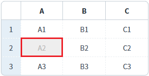
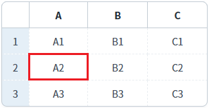
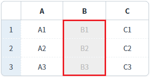
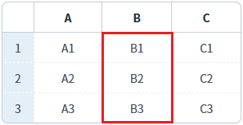
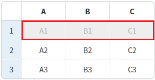

[GridView] 비활성화 여부 설정하기 - 셀, 컬럼, 로우
1개요
GridView의 메소드를 사용하여 셀, 컬럼, 로우가 비활성화되도록 설정한 예제입니다.
예제에서 사용된 GridView의 메소드와 기능은 다음과 같습니다.
setCellDisabled: 셀 단위 비활성화
setColumnDisabled: 컬럼 단위 비활성화
setRowDisabled: 로우 단위 비활성화
GridView 'setDisabled' 메소드를 사용하여 비활성화를 설정할 수도 있습니다. 이 메소드는 예제 파일명 'P00190.xml'에서 확인할 수 있습니다.
2구현된 기능
셀의 비활성화 여부 설정하기
컬럼의 비활성화 여부 설정하기
로우의 비활성화 여부 설정하기
3예제 테스트 방법
3.1셀의 비활성화 여부 설정하기
예제 영역 'GridView 셀의 비활성화 여부 설정하기'에 구성된 GridView에서 테스트합니다.1
STEP 1: 초기 상태 확인하기
GridView의 모든 셀이 활성화되어 수정이 가능합니다. 셀을 클릭하면 수정 모드로 변경됩니다.
Image 1.브라우저(Chrome) 실행 예시

2
STEP 2: 셀의 비활성화를 적용합니다.
버튼 "두 번째 행의 'A' 컬럼의 셀을 비활성화 적용하기"를 클릭합니다.
3
STEP 3: 실행 결과를 확인합니다.
두 번째 행의 'A' 컬럼의 셀이 비활성화됩니다. 셀의 배경색과 글자색이 변경됩니다. 또한 셀을 클릭하면 수정 모드로 진입하지 않습니다.
Image 2.브라우저(Chrome) 실행 예시

4
STEP 4: 셀의 비활성화를 해제합니다.
버튼 "두 번째 행의 'A' 컬럼의 셀을 비활성화 해제하기"를 클릭합니다.
5
STEP 5: 실행 결과를 확인합니다.
두 번째 행의 'A' 컬럼의 셀이 활성화됩니다. 셀의 배경색과 글자색이 초기 설정 값으로 변경됩니다. 또한 셀을 클릭하면 수정 모드로 진입합니다.
Image 3.브라우저(Chrome) 실행 예시

3.2컬럼의 비활성화 여부 설정하기
예제 영역 'GridView 컬럼의 비활성화 여부 설정하기'에 구성된 GridView에서 테스트합니다.1
STEP 1: 초기 상태 확인하기
GridView의 모든 셀이 활성화되어 수정이 가능합니다. 셀을 클릭하면 수정 모드로 변경됩니다.
Image 4.브라우저(Chrome) 실행 예시
2
STEP 2: 컬럼의 비활성화를 적용합니다.
버튼 "'B' 컬럼에 비활성화 적용하기"를 클릭합니다.
3
STEP 3: 실행 결과를 확인합니다.
'B' 컬럼가 비활성화됩니다. 셀의 배경색과 글자색이 변경됩니다. 또한 셀을 클릭하면 수정 모드로 진입하지 않습니다.
Image 5.브라우저(Chrome) 실행 예시

4
STEP 4: 컬럼의 비활성화를 해제합니다.
버튼 "'B' 컬럼에 비활성화 해제하기"를 클릭합니다.
5
STEP 5: 실행 결과를 확인합니다.
'B' 컬럼가 활성화됩니다. 셀의 배경색과 글자색이 초기 설정 값으로 변경됩니다. 또한 셀을 클릭하면 수정 모드로 진입합니다.
Image 6.브라우저(Chrome) 실행 예시

3.3로우의 비활성화 여부 설정하기
예제 영역 'GridView 로우의 비활성화 여부 설정하기'에 구성된 GridView에서 테스트합니다.1
STEP 1: 초기 상태 확인하기
GridView의 모든 셀이 활성화되어 수정이 가능합니다. 셀을 클릭하면 수정 모드로 변경됩니다.
Image 7.브라우저(Chrome) 실행 예시
2
STEP 2: 로우의 비활성화를 적용합니다.
버튼 "첫 번째 행에 비활성화 적용하기"를 클릭합니다.
3
STEP 3: 실행 결과를 확인합니다.
첫 번째 행이 비활성화됩니다. 셀의 배경색과 글자색이 변경됩니다. 또한 셀을 클릭하면 수정 모드로 진입하지 않습니다.
Image 8.브라우저(Chrome) 실행 예시

4
STEP 4: 로우의 비활성화를 해제합니다.
버튼 "첫 번째 행에 비활성화 해제하기"를 클릭합니다.
5
STEP 5: 실행 결과를 확인합니다.
첫 번째 행이 활성화됩니다. 셀의 배경색과 글자색이 초기 설정 값으로 변경됩니다. 또한 셀을 클릭하면 수정 모드로 진입합니다.
Image 9.브라우저(Chrome) 실행 예시

4구현 예시
4.1셀의 비활성화 여부 설정하기
1
스크립트를 작성합니다.
GridView의 'setCellDisabled' 메소드를 사용합니다.
Example 1.Script
//예제 파일의 스크립트 "scwin.btn_ex1_onclick" 또는 "scwin.btn_ex2_onclick"를 참고하세요. //GridView 'grd_exam1'의 두 번째 행의 'A' 컬럼의 셀을 비활성화 적용하기 grd_exam1.setCellDisabled(1, "col_a", true); //GridView 'grd_exam1'의 두 번째 행의 'A' 컬럼의 셀을 비활성화 해제하기 grd_exam1.setCellDisabled(1, "col_a", false)
4.2컬럼의 비활성화 여부 설정하기
1
스크립트를 작성합니다.
GridView의 'setColumnDisabled' 메소드를 사용합니다.
Example 2.Script
//예제 파일의 스크립트 "scwin.btn_ex3_onclick" 또는 "scwin.btn_ex4_onclick"를 참고하세요. //GridView 'grd_exam2'의 'B' 컬럼에 비활성화 적용하기 grd_exam2.setColumnDisabled("col_b", true); //GridView 'grd_exam2'의 'B' 컬럼에 비활성화 해제하기 grd_exam2.setColumnDisabled("col_b", false)
4.3로우의 비활성화 여부 설정하기
1
스크립트를 작성합니다.
GridView의 'setRowDisabled' 메소드를 사용합니다.
Example 3.Script
//예제 파일의 스크립트 "scwin.btn_ex5_onclick" 또는 "scwin.btn_ex6_onclick"를 참고하세요. //GridView 'grd_exam3'의 첫 번째 행에 비활성화 적용하기 grd_exam3.setRowDisabled(0, true); //GridView 'grd_exam3'의 첫 번째 행에 비활성화 해제하기 grd_exam3.setRowDisabled(0, false);
5유의 사항
이 예제에서는 비활성화 여부 설정에 대한 구현 예시만 작성되어 있습니다.
비활성화 된 셀의 배경색과 글자색을 설정하는 예제는 [GridView] 셀이 비활성화되었을 때의 셀 배경색, 글자색 설정하기에 작성되어 있습니다.
6주요 API
setCellDisabled( rowIndex , colIndex , disabled )
setColumnDisabled( colIndex , disabled )
setRowDisabled( rowIndex , disableFlag )
disabledBackgroundColor
disabledFontColor